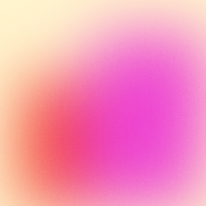
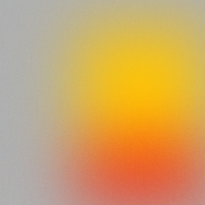

Thinking
Thinking...
Analyzing your request...
I'm using the simple skill because this is a focused visual/component change; I'll keep the implementation narrow and preserve the existing panel's content, sizing, and privacy/accessibility behavior. I'm also checking the current worktree first so I don't overwrite unrelated
The selected region is the card, not the contact section or hero. The current checkout already contains unrelated in-progress hero-video edits, so I'll leave those untouched and add the new MP4 only to the selected card's background.
Planning video background replacement
make catalog-build
sed -n '1,260p' .agents/skills/
sesori-plan-worker/SKILL.md >/dev/
null
gh pr view 904 --json
state,mergedAt,mergeCommit,url
git status --short --branch
The selected region is the card, not the contact section or hero. The current checkout already contains unrelated in-progress hero-video edits, so I'll leave those untouched and add the new MP4 only to the selected card's background.


Added clickable “Common issues” pills to the written-feedback step:
They support multi-selection, keyboard access, dark/light themes, and pill-only submission. Restart clears selections; Back preserves them. I verified both platform layouts and the existing rating branches in a real browser.
Refresh the open feedback prototype to try it.